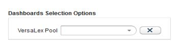

| Cleo Dashboards and Cleo System Monitor | |
The Cleo Dashboards™ software is designed for a business user, at a higher level than the Cleo VLTrader user.
The following are prerequisites for running the Cleo Dashboards software on a specific VersaLex pool:
Access the Cleo Business Dashboards application through a web browser. The default URL uses the format http(s)://VesraLexComputerIP:http(s)Port/VLDashboards, where VesraLexComputerIP is the address of the VersaLexes in the pool (or VLProxy) and http(s)Port is the HTTP(s) port the system is listening on for HTTP(s) traffic.
After logging in, select a VersaLex Pool to view.

The reports configured in Cleo VLNavigator for this user will be displayed.
The Cleo Dashboards software includes the following baseline dashboards:
In addition to the baseline dashboards, supplementary dashboards may also be available. See Supplementary Dashboards for more information.
Throughout the dashboards, there will be both Status and General Status terms. Status relates directly to the detailed status of the transfer (i.e., Success, Error, Warning, Receipt Pending, etc.). General Status is a more general classification of simply Failed, Successful and In Progress. The table below shows the mapping between Status and General Status.
| Status | General Status |
|---|---|
| Delete Error | Successful |
| Delete Resolved | Successful |
| Discarded | Failed |
| Error | Failed |
| Exception | Failed |
| In Progress | In Progress |
| Interim Success | In Progress |
| Interim Warning | In Progress |
| Interrupted | Failed |
| MDN Pending | Successful |
| Receipt Pending | Successful |
| Success | Successful |
| Warning | Successful |